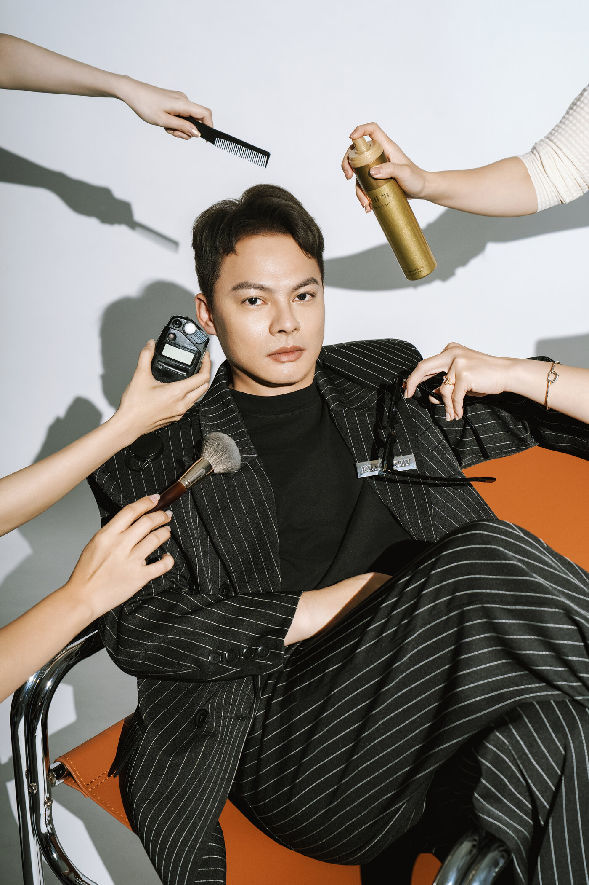

男生很少會說「我想做形象改造」。比較常聽到的是：下個月要面試、要開始跑業務、剛升上主管要對外簡報、要去約會、要拍一張放在官網上的照片，或是被另一半、被同事說「你最近氣色不太好」。
這些入口背後，其實是同一個念頭：想讓自己看起來更好。說白了，就是想變帥。這一點都不奇怪，每個人想改變，都是想變得更好。
要談的是怎麼變。男生的帥，很少來自長得像誰，多半來自看起來像自己：髮型、服裝、細節與膚況整理到位，穿起來自在，人就放得開，自信和魅力也跟著出來。要動的常常是幾個小地方，而且有先後。
帥從哪裡來
很多人想變帥，第一步是找範本：某位藝人的髮型、某個品牌的穿法。範本可以參考，但它不是照你的臉型、身材、個性和生活設計的。照著改完，常見的情況是衣服很搶眼，人卻不太自在；穿得不自在，人很難放鬆，自信反而出不來。
比較好的做法是先看自己：你給人的感覺是沉穩、俐落，還是親切？平常會出現在哪些場合？你希望別人看到你哪一面？把這些想清楚，再決定改什麼。同樣是改髮型，一位要開始帶團隊的主管和一位要開始接案的設計師，適合的方向就不一樣。改完之後，別人看到的還是你，只是更有精神，也更有自信。
這件事在〈先想清楚，要讓人看見哪一面〉談得更完整。以下講的是方向確定之後，實際該從哪裡動手。
四個改動，順序很重要
改對幾個地方，就會有明顯的差別。我們通常建議從花費少、改起來快的開始：
| 順序 | 改什麼 | 為什麼先做 | 大概要做什麼 |
|---|---|---|---|
| 1 | 髮型輪廓 | 臉的外框，影響整個人看起來有沒有精神；花費最少、改起來最快 | 鬢角與後頸線乾淨、頂部有型；三到四週修一次。不是換髮型，是把現在的髮型修到有輪廓 |
| 2 | 合身 | 一件合身的舊西裝，比一件不合身的新西裝好；鏡頭與現實都看得出來 | 肩線落在肩點、袖長露出襯衫一點、褲長輕觸鞋面。既有的衣服先拿去修改，通常比買新的划算 |
| 3 | 末端細節 | 鞋、錶、領口、指甲，是整套穿搭的收尾 | 皮鞋依材質保養、鞋跟沒有明顯磨損；領口不鬆垮不泛黃；指甲與鬍子有意識地處理 |
| 4 | 膚況與妝髮 | 油光、眼下疲態、膚色不均，常讓人看起來氣色不好、沒精神，照片與上台時也會被放大 | 日常做好清潔與保濕；重要場合或拍攝前，可以請造型師協助膚色修飾與妝髮整理。妝感的濃淡與造型方向，依場合和個人喜好討論 |
前兩項先做好，整體會俐落很多；第三、四項是收尾，讓細節也跟得上。
逐項的檢查清單，在〈男士商務形象自檢十二項〉可以照著跑一次。

常見的三個錯
為了改變而全部換新。新衣服不會服貼身體與慣性姿態，鏡頭全部看得出來。先修改既有的，再決定要補什麼。
只改衣服不改頭。髮型是臉的外框，衣服再對、輪廓不對，讀起來還是沒精神。
改成另一個人。同事與客戶認得的是原本的你，改到需要重新認一次，反而扣分。帥要建立在你自己的特質上，改完還是你，只是更好看、更有自信。
場合決定力度
同樣的四個改動，力度依場合調：
面試與第一次見客戶。正式度往上一級，但不要比日常正式兩級，見面時的落差會變成扣分。
簡報與上台。髮型輪廓與膚況最重要，因為距離遠、燈光強，細節看不到，輪廓看得到。
拍形象照。四項全做，而且要在拍之前兩到四週開始，髮型修完要有時間長回自然的樣子。
約會。先看當天要去哪裡、做什麼，再挑你喜歡、穿起來也自在的衣服。想多花一點心思，可以從搭配、髮型或配件調整。
婚禮賓客與家屬。分寸比造型重要，整齊但不搶焦點。
在台中怎麼做
CHUN.EN 接到男生的委託，通常從一場訪談開始：你現在給人什麼感覺、想讓別人看到什麼樣子、會出現在哪些場合。這是 À Voir 的角色定位在處理的事，訪談線上或到場都可以。
方向確定之後，才是四個改動的執行。服裝的方向與選品由 À Voir 接手；髮型整理、膚色修飾與重要場合的妝髮，可以向 B.room 洽詢，依場合和你的喜好討論造型；需要一組能用的照片，由 C.photos 在同一個方向下拍攝。三項可以單獨委託，也可以一次整合。想了解穿搭、妝髮或課程的內容與費用，可以參考〈男士形象顧問〉。
讀完這篇，先做一件事
打開你最近一次被拍到的照片，不管是活動側拍還是自拍，問一個問題：
照片裡的這個人，是我想讓別人看到的樣子嗎？
不是的話，先看髮型輪廓和合身，那是最便宜也最快的兩步。